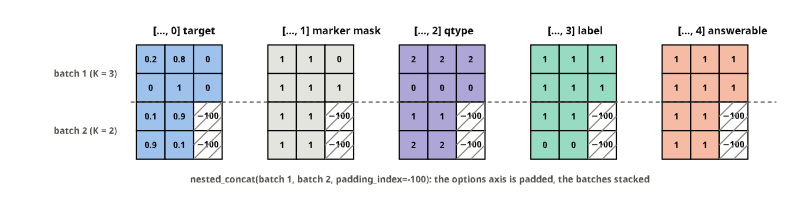

FIX = "fixtures/tiny-modernbert"
data = TypedDecisions.from_json("fixtures/typed_decisions_tiny.jsonl", valid=0.25, calib=0.2)
spec = EncoderSpec.from_pretrained(FIX)
data.bind(spec.tokenizer, spec.template)
datalearner
DecisionTrainer, a transformers.Trainer with two overrides, and Learner, fastai’s verbs over it: lr_find, fit, fit_one_cycle, freeze, calibrate.
Training is transformers.Trainer with two overrides, the loss and the optimizer groups, plus what Laya’s notebook does by hand: the RLCD loss, discriminative learning rates, the σ schedule and a calibration pass on held-out rows. The training loop, mixed precision, gradient accumulation, checkpointing, distributed training and the reporters are the Trainer’s, untouched. On top sit fastai’s verbs: lr_find, fit, fit_one_cycle, freeze, unfreeze, freeze_to.
The fixtures again: twenty cases and the tiny ModernBERT.
How a fit runs
One call to fit_one_cycle, from the verb to the temperatures:
sequenceDiagram
participant U as you
participant L as Learner
participant T as DecisionTrainer (a transformers.Trainer)
participant M as EncoderDecisionModel
participant C as callbacks
U->>L: fit_one_cycle(epochs, lr)
L->>T: _run: schedule arguments set in place, optimizer reset
T->>T: create_optimizer: head and encoder groups, no decay on biases and norms
loop every epoch
T->>C: on_epoch_begin: SigmaSchedule sets σ, OptionShuffle sets the epoch
loop every batch
T->>M: collated batch: input_ids, marker_pos, marker_mask, qtype
M-->>T: logits (batch, K)
T->>T: compute_loss (RLCD in training, soft CE in evaluation), backward, clip at 1, step
end
T->>C: on_evaluate: Recorder keeps the metrics
end
T->>C: on_train_end: CalibrationCallback
C->>L: calibrate(): temperatures fitted on the calib split
L-->>U: the last epoch's metrics
Everything in the loop is the Trainer’s own; sysone supplies the loss, the optimizer groups, two schedules and five callbacks.
DecisionTrainer
compute_loss pops the targets, runs the model and applies the loss; in evaluation it uses soft cross-entropy, since RLCD’s noise would make the evaluation loss jitter. prediction_step returns the logits and, packed into one tensor, what the metrics need per row: the target, the marker mask, the type and the label. The Trainer pads everything it gathers across batches with -100, so the packing puts the options on the axis it pads and the mask tells real options from padding. Evaluation reads rows in order, so predictions line up with the dataset.
unpack_answerable
def unpack_answerable(
packed
):Each row’s answerability from pack_labels output (1 answerable, 0 not, -1 no gold)
unpack_labels
def unpack_labels(
packed
):targets, masks, qtypes, labels from pack_labels output gathered by the Trainer (padded with -100)
pack_labels
def pack_labels(
b
)->torch.Tensor:Target, marker mask, question type, label and answerability of a batch as one (batch, K, 5) tensor
b = data.collator([data.rows()[i] for i in range(4)])
tg, mk, qt, lb = unpack_labels(np.pad(pack_labels(b).numpy(), ((0, 0), (0, 2), (0, 0)), constant_values=-100))
test_eq(mk, np.pad(b["marker_mask"].numpy(), ((0, 0), (0, 2))))
test_eq((qt, lb), (b["qtype"].numpy(), b["label"].numpy()))The packing, for two evaluation batches with different option counts: the Trainer joins them with nested_concat, padding the options axis with −100, and the mask channel is what tells real options from padding when unpack_labels reads them back.

Drawn with pack_labels and the Trainer’s nested_concat in figures.
DecisionTrainer
def DecisionTrainer(
*args, loss_fn:NoneType=None, lr_head:float | None=None, lr_encoder:float | None=None, act_weight:float=0.5,
**kwargs
):A Trainer with the decision loss, head and encoder learning rates, and an optional LR-range or one-cycle schedule
create_optimizer builds four groups, head and encoder (or its adapters), each split by the Trainer’s own no-decay rule for biases and norms. The head’s groups come first, so the learning rate the Trainer logs is the head’s. create_scheduler adds two schedules the Trainer lacks: the exponential ramp of the LR range test and torch’s exact OneCycleLR; both scale every group, so the encoder keeps its ratio to the head.
DecisionTrainer.create_scheduler
def create_scheduler(
num_training_steps:int, optimizer:NoneType=None
):Setup the scheduler. The optimizer of the trainer must have been set up either before this method is called or passed as an argument.
Args: num_training_steps (int): The number of training steps to do.
Returns: torch.optim.lr_scheduler.LRScheduler: The learning rate scheduler instance.
DecisionTrainer.create_optimizer
def create_optimizer(
model:NoneType=None
):Setup the optimizer.
We provide a reasonable default that works well. If you want to use something else, you can pass a tuple in the Trainer’s init through optimizers, or subclass and override this method in a subclass.
Returns: torch.optim.Optimizer: The optimizer instance.
TrainingArguments
TrainingArguments is used as is. training_args fills in what decision training wants: no checkpoints, no reporters, the column names our collator reads, length-grouped batches on the precomputed n_tokens, clipping at 1 and weight decay 0.01, and the arguments of the current transformers version where they were renamed (warmup_steps as a ratio replaced warmup_ratio, train_sampling_strategy replaced group_by_length).
training_args
def training_args(
output_dir, **kw
)->transformers.training_args.TrainingArguments:TrainingArguments with sysone’s defaults, overridable by keyword
Hardware presets
Presets are plain dictionaries of TrainingArguments, to print and edit. macbook is MPS in fp32 with small batches, meant for head-only runs with the cache (bf16 runs on MPS but costs accuracy on some encoders); t4 and t4x2 are fp16 with gradient checkpointing and 8 × 4 accumulation, the notebook’s shape (for t4x2, launch with torchrun --nproc_per_node=2); l4 and a100 are bf16. tpu and neuron are bf16 and train on full batches only (dataloader_drop_last), while evaluation and prediction still see every row, the last batch shorter (one more graph for XLA to compile, once); a learner with either prepares its batches and step for XLA (see xla). SYSONE_PRESET picks one from the environment, which is how jobs choose the preset of the machine they run on.
args = training_args(tempfile.mkdtemp(), **PRESETS["cpu"])
test_eq((args.device.type, args.save_strategy, args.label_names, args.remove_unused_columns), ("cpu", "no", ["target"], False))
PRESETS["t4"]Callbacks
Five small callbacks do what the notebook did by hand. SigmaSchedule anneals RLCD’s σ once per epoch; OptionShuffle tells the Shuffle transforms which epoch it is; Recorder keeps the losses and the evaluation metrics; LRFinder records the loss at every step of the range test and stops the run when the smoothed loss passes four times its best; CalibrationCallback fits the temperatures on the held-out slice when training ends, however the training was started. A sixth, FitLog, notes each fit for the training record: what was asked for (epochs, learning rates, schedule, batch size, precision) and what it took (steps, seconds, peak memory). The range test of lr_find is not a fit, so it is left out.
LRFinder
def LRFinder(
factor:float=4.0, beta:float=0.98, stop_div:bool=True
):Record (lr, loss) every step and stop when the smoothed loss diverges
FitLog
def FitLog(
learner
):One entry per fit for the training record: what was asked for (epochs, learning rates, schedule, batch) and what it took
peak_memory_gb
def peak_memory_gb(
device:str, mps_bytes:int=0
)->float | None:The most memory a fit used: CUDA’s peak since the last reset, the MPS driver’s largest allocation seen, or the process’s peak RSS
CalibrationCallback
def CalibrationCallback(
learner
):Fit the learner’s temperatures on its calib split when training ends
Learner
Learner holds the data, the model, the loss, the regime and the Trainer. learn.trainer is the raw transformers.Trainer, with its arguments at learn.args; the verbs below change only the schedule-related arguments before each run, so anything else set there sticks. lr is one value for the head, the encoder getting a quarter of it (Laya’s ratio: 1e-4 and 2.5e-5), or a pair (encoder, head).
Learner
def Learner(
data:sysone.data.TypedDecisions, # cases, bound to the encoder's tokenizer
model:sysone.models.EncoderDecisionModel, # encoder and head, regime already set
loss:NoneType=None, # 'soft_ce', 'rlcd', a callable, or the data's default
cache:str | None=None, # 'masks' or 'rows' to train a frozen encoder's head from cached features
lr:float=0.0001, # head LR, or (encoder, head)
preset:str | None=None, # a key of PRESETS; SYSONE_PRESET or the hardware's by default
path:NoneType=None, # where the Trainer writes; a temporary folder by default
cache_dir:NoneType=None, # where feature caches live; ~/.cache/sysone/features by default
cache_dtype:str='float16', # how a feature cache stores the vectors; float32 for an encoder whose vectors float16 cannot hold
calibrate_after_fit:bool=True, # fit temperatures on the calib split after every fit
callbacks:list | None=None, # extra TrainerCallbacks
act_weight:float=0.5, # the act head's loss weight, beside the option loss
metrics:list | None=None, # more metrics, beside Laya's: functions of a `Preds`, or `Metric`s (see metrics)
**args
):Data, model, loss and a DecisionTrainer, with fastai’s training verbs
Learner.dataset
def dataset(
split:str='train'
):What the Trainer reads for a split: cached features, rows built on read, or static rows
torch.manual_seed(0)
model = set_regime(EncoderDecisionModel(spec.load_encoder(), DecisionHead(spec.width, layers=1), spec), "full")
learn = Learner(data, model, preset="cpu", logging_steps=1)
learntest_eq(learn.trainer.lr_head, 1e-4); test_eq(learn.trainer.lr_encoder, 2.5e-5)
assert isinstance(learn.loss, RLCD) # typed-decisions gold is a distribution
test_eq(len(learn.dataset("train")), len(data.rows("train")))Running the Trainer
_run is the one place the Trainer runs: it sets the schedule-related arguments on learn.args, resets the optimizer so new learning rates apply, points the Trainer at the right datasets, trains, and puts the arguments back. It also notes on the model when the encoder has trained, so an export after a later freeze() still carries the trained encoder. With a feature cache the length grouping is off (there is no sequence to pad), and so is the n_tokens column’s role.
A head built with standardize=True needs the statistics of the encoder’s vectors before it trains; _run and lr_find fit them on first use, from the cached anchors when there is a cache, and otherwise from one pass of the encoder over up to n training rows (the anchors for a head without layers, every position for one with layers):
Learner.fit_standardizer
def fit_standardizer(
n:int=512, batch_size:int=8
):Fit the head’s per-dimension standardisation on up to n training rows
torch.manual_seed(0)
ls = Learner(data, set_regime(EncoderDecisionModel(spec.load_encoder(), DecisionHead(spec.width, layers=0, standardize=True), spec), "head"), preset="cpu", calibrate_after_fit=False)
test_eq(ls.model.head.standardizer_fitted, False)
ls._run(1, 1e-3)
test_eq(ls.model.head.standardizer_fitted, True)
test_eq(ls.model.head.in_std.min().item() > 0, True)
NoteFinding: a new TrainingArguments resets the Trainer’s accelerator
The first _run built a fresh TrainingArguments for every run. Creating one resets accelerate’s global state (TrainingArguments.__post_init__ sets up the device, which calls AcceleratorState._reset_state()), and the Trainer’s accelerator, built from that state, is left without it: the next training step fails. _run therefore sets its fields on the live arguments and puts them back afterwards. What a second arguments object does to a learner:
TrainingArguments(tempfile.mkdtemp(), use_cpu=True, report_to="none") # what building fresh arguments for a run does
test_fail(lambda: learn._run(1, 1e-3), contains="AcceleratorState")
learn.trainer.create_accelerator_and_postprocess() # rebuild the accelerator, so the notebook can go onPredictions and metrics
get_preds runs the Trainer’s prediction loop over a split and returns the logits with everything the metrics need, as a [Preds](https://sgaseretto.github.io/sysonelib/metrics.html#preds): the gold, the masks, the kinds and labels, each row’s p(act) with an act head, and each row’s question, case and option keys (row_meta and option_keys read them off the split’s rows, in the order the Trainer reads them). validate turns them into the notebook’s metrics, calibrated with the fitted temperatures unless told otherwise, plus, once an act threshold is fitted, the coverage and the accuracy on the cases acted on.
Learner.validate
def validate(
split:str='valid', calibrated:bool=True, metrics:list | None=None
)->dict:The notebook’s metrics on a split, the learner’s own metrics, and any more given here
Learner.get_preds
def get_preds(
split:str='valid'
)->sysone.metrics.Preds:Every row of a split as a Preds: logits, gold, masks, kinds and labels, p(act) with an act head, each row’s question, case and option keys, and the learner’s temperatures
Learner.option_keys
def option_keys(
split:str='valid'
)->list:Each row’s option keys, in the order the Trainer reads a held-out split (looked up once per split)
Learner.row_meta
def row_meta(
split:str='valid'
)->dict:Each row’s question id, case index and case id, in the order the Trainer reads the split
calibrate
One temperature per question type and option-count bucket, fitted on the held-out calibration slice and never on training rows; the Decider divides each row’s logits by its bucket’s temperature. With no calib split it falls back to the validation split, with a warning, since those rows are held out too. With an act head it also fits the act thresholds on the same rows, per question type and option-count bucket as the temperatures are: the lowest p(act) at which the cases acted on are still right act_accuracy of the time (0.9 by default), which the Decider reports as action.act. act_score="confidence" puts the thresholds on the calibrated top probability instead, and it works for a model without an act head too. The learner remembers the choice, so the calibration after a later fit keeps it.
Learner.calibrate
def calibrate(
split:str='calib', min_rows:int=10, act_accuracy:float | None=0.9, act_score:str | None=None
)->dict:Fit temperatures per question type and option-count bucket on held-out rows, and act thresholds on p(act) or (‘confidence’) the calibrated top probability
fit and fit_one_cycle
fit warms up and then holds the learning rate; fit_one_cycle warms up for pct_start of the steps and then follows a cosine to zero, through the Trainer’s own scheduler, or torch’s exact OneCycleLR with onecycle=True. Both return the last epoch’s metrics; the calibration callback has fitted the temperatures by then.
Learner.fit_one_cycle
def fit_one_cycle(
epochs:int, lr:NoneType=None, pct_start:float=0.25, onecycle:bool=False, **args
):Train for epochs with warmup then cosine annealing (onecycle=True: torch’s OneCycleLR)
Learner.fit
def fit(
epochs:int, lr:NoneType=None, warmup:float=0.1, **args
):Train for epochs: linear warmup, then a constant learning rate
torch.manual_seed(0)
before = {k: v.clone() for k, v in learn.model.state_dict().items()}
res = learn.fit_one_cycle(2, lr=1e-3)
restest_eq(len(learn.recorder.metrics), 2)
assert all(math.isfinite(l) for l in learn.recorder.losses)
changed = [k for k, v in learn.model.state_dict().items() if not torch.equal(v, before[k])]
assert any(k.startswith("head.") for k in changed) and any(k.startswith("encoder.") for k in changed)
test_eq(set(learn.temperatures) <= {"choice", "score", "noul", "choice:3-5", "choice:2", "score:3-5", "noul:2"}, True)fl = learn.fit_log.fits
test_eq((len(fl), fl[0]["schedule"], fl[0]["epochs"], fl[0]["lr_head"], fl[0]["device"], fl[0]["precision"]), (1, "cosine", 2, 1e-3, "cpu", "fp32"))
assert fl[0]["steps"] > 0 and fl[0]["seconds"] >= 0 and math.isfinite(fl[0]["final_loss"])
fl[0]The three schedules, as the Trainer and create_scheduler build them, for a run of 100 steps at a head learning rate of 10⁻³. Both groups follow the same shape, the encoder at a quarter of the head:
figure code
def lr_curve(kind, steps=100, head=1e-3, warmup=0.25):
"The learning rate of each group at every step, from the scheduler a run would build"
ps = [torch.nn.Parameter(torch.zeros(1)) for _ in range(2)]
opt = torch.optim.AdamW([{"params": [ps[0]], "lr": head}, {"params": [ps[1]], "lr": head / 4}])
if kind == "onecycle":
sch = torch.optim.lr_scheduler.OneCycleLR(opt, max_lr=[head, head / 4], total_steps=steps, pct_start=warmup, anneal_strategy="cos", cycle_momentum=False)
else: sch = get_scheduler(kind, opt, num_warmup_steps=int(warmup * steps), num_training_steps=steps)
out = []
for _ in range(steps): out.append([g["lr"] for g in opt.param_groups]); opt.step(); sch.step()
return np.array(out)
curves = {"fit: constant after 10% warmup": lr_curve("constant_with_warmup", warmup=0.1),
"fit_one_cycle: cosine after 25% warmup": lr_curve("cosine"), "fit_one_cycle(onecycle=True)": lr_curve("onecycle")}
fig, axs = plt.subplots(1, 3, figsize=(10, 2.3), sharey=True)
for ax, (name, c) in zip(axs, curves.items()):
ax.plot(c[:, 0], label="head"); ax.plot(c[:, 1], label="encoder: a quarter"); ax.set_title(name); ax.set_xlabel("step")
axs[0].set_ylabel("learning rate"); axs[0].legend(); plt.tight_layout(); plt.show()The metrics on the validation split, calibrated with the temperatures the fit just produced, and a recalibration with a lower row threshold (the fixture is tiny):
p = learn.get_preds("valid")
test_eq(p["logits"].shape[0], len(data.rows("valid")))
test_eq(p["masks"].sum(-1).tolist(), [len(m) for m in data.rows("valid")["markers"]])
learn.validate()
NoteFinding: the Trainer groups evaluation rows by length too
The check just above, that the predicted rows come back in the dataset’s order, failed at first. With train_sampling_strategy="group_by_length", which sysone uses to cut padding in training, transformers’ _get_eval_sampler groups the evaluation rows by length as well, so predict returns them shuffled. The metrics computed inside the loop are unaffected, since the labels travel with the predictions, but anything that joins predictions back to rows by position (answers per case, accuracy per workflow) would be scrambled. DecisionTrainer keeps evaluation sequential:
valid_rows = learn.dataset("valid")
grouped, ours = list(Trainer._get_eval_sampler(learn.trainer, valid_rows)), list(learn.trainer._get_eval_sampler(valid_rows))
test_eq(ours, list(range(len(valid_rows))))
test_ne(grouped, ours)
groupedlearn.calibrate(min_rows=5)The temperatures come from the callback, so they are fitted however training starts, here through the raw Trainer:
calls, calibrate = [], learn.calibrate
learn.calibrate = lambda *a, **k: calls.append(1) or calibrate(min_rows=4) # the fixture's calib slice is tiny
learn.temperatures = {}
learn._run(1, 1e-3) # learn.trainer.train() with the schedule arguments set
del learn.calibrate
test_eq(len(calls), 1); assert learn.temperaturesThe optimizer groups carry the discriminative learning rates, and the no-decay rule holds in both parts:
[(g["name"], g["lr"], g["weight_decay"], len(g["params"])) for g in learn.trainer.optimizer.param_groups]g = {x["name"]: x for x in learn.trainer.optimizer.param_groups}
test_eq(sorted(g), ["encoder/decay", "encoder/no_decay", "head/decay", "head/no_decay"])
test_eq(learn.trainer.optimizer.param_groups[0]["name"], "head/decay")Metrics
decision_metrics is always computed, and metrics=[...] adds more columns, fastai’s way: functions of a Preds, or Metrics that bind arguments, keep a metric to one kind of question or rename it (see metrics). The learner computes them after every epoch on the valid split, so the recorder keeps a history of each, and validate computes them on any split, plus any more given to it. Per-question metrics such as macro-F1 group the rows by question and count classes by option key, as answer_metrics does, since get_preds knows both.
from sysone.metrics import F1Score, Metric, f1_score, log_loss, top_k_accuracytorch.manual_seed(0)
lm = Learner(data, set_regime(EncoderDecisionModel(spec.load_encoder(), DecisionHead(spec.width, layers=1), spec), "full"), preset="cpu",
calibrate_after_fit=False, metrics=[F1Score(), Metric(f1_score, qtype="noul"), top_k_accuracy])
lm.fit(2, 1e-3)
test_eq([k for k in ("f1_score", "f1_score_noul", "top_k_accuracy") if k in lm.recorder.metrics[-1]], ["f1_score", "f1_score_noul", "top_k_accuracy"])
v, pv = lm.validate(metrics=[log_loss]), lm.get_preds()
test_close(v["f1_score"], f1_score(pv)); test_eq("log_loss" in v, True)
test_eq((len(pv.qids), len(pv.option_keys), pv.n), (len(lm.dataset("valid")),) * 3)
test_eq([pv.option_keys[i][int(pv.labels[i])] for i in range(3)],
[str(as_questions(case_record(data.cases["valid"], c)["questions"])[q].keys[int(l)]) for c, q, l in zip(pv.case_idx[:3], pv.qids[:3], pv.labels[:3])])
{k: round(v[k], 3) for k in ("accuracy", "f1_score", "f1_score_noul", "top_k_accuracy", "log_loss")}Freezing
freeze trains the head only, unfreeze everything, freeze_to(n) all but the embeddings and the first n layers. With a feature cache configured, freezing turns it back on and unfreezing turns it off, since features cached from a frozen encoder go stale once it trains.
Learner.unfreeze
def unfreeze():Train the encoder too (its adapters, for a LoRA model); the feature cache is set aside
Learner.freeze
def freeze():Train the head only (and use the feature cache, if one is configured)
learn.freeze()
test_eq(learn.model.n_params()["trainable"], learn.model.n_params()["head"])
learn.freeze_to(2)
test_eq([all(p.requires_grad for p in l.parameters()) for l in encoder_layers(learn.model.encoder)], [False, False, True, True])
learn.unfreeze()
test_eq(learn.model.frozen, False)
test_eq(getattr(learn.model, "encoder_trained", False), True) # it trained in the fit abovelr_find
The learning-rate range test: from start to end in steps exponential steps, recording the loss, stopping when it diverges. The model and optimizer state are restored afterwards, so it can run at any point, and its steps stay out of learn.recorder, which holds the training history. It suggests two values: valley, fastai’s default, the middle of the longest stretch where the loss falls, and steep, where it falls fastest. With matplotlib installed, plot=True draws the curve.
valley
def valley(
lrs, losses
):fastai’s valley: halfway along the longest run over which the loss keeps falling
lr_grid = list(np.logspace(-6, 0, 60))
toy = [3.0 - 2.5 / (1 + np.exp(-(np.log10(l) + 3.5) * 3)) + 8 * max(0, np.log10(l) + 1.5) ** 2 for l in lr_grid]
sv, ss = valley(lr_grid, toy), steep(lr_grid, toy)
lr_min = lr_grid[int(np.argmin(toy))]
assert 1e-5 < sv < lr_min and 1e-5 < ss < lr_min # both on the falling side of the curve
sv, ssWhy not the minimum? At the lowest point of the curve the loss is about to blow up: the learning rate is at the edge of what training tolerates, and on a real run the smoothed curve lags behind the steps as well. The suggestions sit on the long descent before it, steep where the loss falls fastest and valley halfway along the longest stretch over which it keeps falling:
figure code
fig, ax = plt.subplots(figsize=(5, 2.5))
ax.plot(lr_grid, toy, color="gray", lw=1.2); ax.set_xscale("log")
for name, v, c in (("steep", ss, "C1"), ("valley", sv, "C0"), ("minimum", lr_min, "C3")): ax.axvline(v, ls="--", color=c, lw=1, label=f"{name} {v:.1e}")
ax.set_xlabel("learning rate"); ax.set_ylabel("loss"); ax.legend(); plt.tight_layout(); plt.show()Learner.plot_lr_find
def plot_lr_find(
sugg:NoneType=None
):Plot the last lr_find curve (needs matplotlib)
Learner.lr_find
def lr_find(
start:float=1e-07, end:float=1.0, steps:int=100, stop_div:bool=True, plot:bool=False
)->__main__.SuggestedLRs:LR range test: suggests valley and steep, and restores the model afterwards
learn.freeze()
w0, history = learn.model.head.scorer[1].weight.clone(), list(learn.recorder.losses)
sugg = learn.lr_find(start=1e-5, end=10, steps=40)
test_eq(torch.equal(learn.model.head.scorer[1].weight, w0), True) # the model is restored
test_eq(learn.recorder.losses, history) # and the training history
assert 1e-5 <= sugg.valley <= 10 and len(learn.lr_curve[0]) > 5
suggtest_eq([f["schedule"] for f in learn.fit_log.fits], ["cosine", "cosine"]) # fit_one_cycle and _run; the range test is not a fitshow_batch prints training rows as the model reads them:
Learner.show_batch
def show_batch(
n:int=2, split:str='train', max_chars:int=300
):Print the first n rows of a split with their anchors visible
learn.show_batch(1)Answers and exports
decider, predict and export hand over to sysone.inference, where the Decider and the export layout live; they import it when first called, so a learner has every verb whichever module it came from; [load_learner](https://sgaseretto.github.io/sysonelib/inference.html#load_learner) turns an export back into a learner. On several GPUs (torchrun), every process runs the script, and export writes from the main process while the others wait:
Learner.export
def export(
path, **kw
):Write the model, template, transforms and temperatures to path (see sysone.inference.export_learner); on several GPUs, the main process writes
Learner.predict
def predict(
state, questions:dict, **kw
)->dict:Answers in the Jev schema from the model in memory
Learner.decider
def decider(
**kw
):A sysone.inference.Decider over the learner’s model in memory
learn.trainer.is_world_process_zero = lambda: False # as on another process of a run on several GPUs
test_eq(learn.export(Path(tempfile.mkdtemp()) / "not-main").exists(), False)
del learn.trainer.is_world_process_zerodecision_learner
The one-call learner: an encoder id, a regime and a head shape (with standardize=True, a head that standardises the encoder’s vectors first). train is head, lora, mica, full or a peft config. head is laya (Laya’s head, two layers), mlp (Laya’s scorer alone), linear (a linear map) or yesno (a generative model’s own Yes/No at each answer slot, see models, with yesno naming the two tokens); a feature cache implies a head without layers for masks. The text and multimodal applications wrap it with their own default encoders and templates.
decision_learner
def decision_learner(
data:sysone.data.TypedDecisions, encoder, train:str='head', cache:str | None=None, template:NoneType=None,
head:str='laya', head_layers:int | None=None, init_from:str | None=None, loss:NoneType=None, lr:NoneType=None,
preset:str | None=None, dtype:NoneType=None, lora:dict | None=None, standardize:bool=False, readout:str='anchor',
query:str | None=None, act:bool=False, pair_dim:int=256, yesno:tuple=('Yes', 'No'), **kw
)->__main__.Learner:A Learner for data on the encoder encoder (a Hub id, a folder or an EncoderSpec), with regime train
learn2 = decision_learner(TypedDecisions.from_json("fixtures/typed_decisions_tiny.jsonl", valid=0.25), FIX, train="lora",
preset="cpu", loss="soft_ce")
learn2test_eq(learn2.model.regime, "lora")
test_eq(learn2.model.head.layers, 2)
test_fail(lambda: decision_learner(data, FIX, train="full", cache="masks", preset="cpu"), contains="frozen encoder")
learn2.fit(1, lr=1e-3)
for dt in ("float16", "float32"): # the cache stores the vectors in the dtype the learner asks for
lc = decision_learner(data, FIX, train="head", cache="masks", preset="cpu", cache_dtype=dt, cache_dir=tempfile.mkdtemp())
test_eq(lc.dataset("train").features["anchors"].dtype, dt)The GPU presets checkpoint the encoder’s activations (gradient_checkpointing=True), which the trainer turns on as training starts; one LoRA epoch with it, on the CPU:
lg = decision_learner(TypedDecisions.from_json("fixtures/typed_decisions_tiny.jsonl", valid=0.25), FIX, train="lora", preset="cpu",
gradient_checkpointing=True, calibrate_after_fit=False)
lg.fit(1, lr=1e-3)
test_eq(lg.model.encoder.is_gradient_checkpointing, True)With the tpu preset (here on the CPU, in fp32), training drops the last partial batch, which keeps XLA’s shapes fixed, while evaluation sees every validation row, and the calibration after the fit runs on its split:
lx = decision_learner(TypedDecisions.from_json("fixtures/typed_decisions_tiny.jsonl", valid=0.25, calib=0.2), FIX, train="head", preset="tpu",
bf16=False, use_cpu=True)
lx.fit(1, lr=1e-3)
test_eq((lx.trainer.state.global_step, lx.recorder.metrics[-1]["n"]), (len(lx.dataset("train")) // 16, len(lx.dataset("valid"))))
NoteFinding: the XLA presets evaluated on full batches only
transformers applies dataloader_drop_last to evaluation and prediction as well as training. With the tpu preset’s 32-row evaluation batches, the fixture’s 25 validation rows made no batch at all: the fit reported no metrics, and the calibration after it stopped on an empty prediction. On a real validation set, up to 31 rows would have been left out of every metric. DecisionTrainer now builds its evaluation and prediction loaders without it, so their last batch is shorter, one more shape for XLA to compile once.
An act head trains beside the option head. Here a quarter of the fixture’s cases say that none of the options answers their first question, and the learner fits the act threshold with the temperatures:
arecs = [json.loads(l) for l in Path("fixtures/typed_decisions_tiny.jsonl").read_text().splitlines()]
for r in arecs[::4]: r["gold"] = {**r["gold"], next(iter(r["questions"])): {"answerable": False}}
adata = TypedDecisions.from_records(arecs, valid=0.25, calib=0.25)
torch.manual_seed(0)
alearn = decision_learner(adata, FIX, train="head", preset="cpu", loss="soft_ce", act=True, calibrate_after_fit=False, logging_steps=1)
test_eq(sorted(set(adata.rows("train")["answerable"])), [0, 1])
alearn.fit(2, lr=1e-3)
alearn.calibrate(act_accuracy=0.5)
am = alearn.validate()
test_eq({"act_auroc", "act_brier", "n_unanswerable", "coverage", "acted_accuracy"} <= set(am), True)
test_eq(alearn.act_threshold is not None, True)
{k: am[k] for k in ("accuracy", "n", "n_unanswerable", "act_auroc", "coverage", "acted_accuracy")} | {"act_threshold": alearn.act_threshold}The thresholds are a dict, one per question type and option-count bucket wherever the calib split has enough rows, plus all. act_score="confidence" fits them on the calibrated top probability instead, which needs no act head. Here the fixture’s plain learner, which has none, reports action after that calibration, with its answer confidence as the score:
test_eq(isinstance(alearn.act_threshold, dict) and "all" in alearn.act_threshold, True)
torch.manual_seed(0)
clearn = decision_learner(adata, FIX, train="head", preset="cpu", loss="soft_ce", calibrate_after_fit=False)
clearn.fit(1, lr=1e-3)
test_fail(lambda: clearn.calibrate(act_score="head"), contains="needs an act head")
clearn.calibrate(act_accuracy=0.5, act_score="confidence")
ca = next(iter(clearn.predict(arecs[1]["state"], arecs[1]["questions"]).values()))
test_eq((clearn.act_score, ca["action"]["act_probability"]), ("confidence", ca["answer_confidence"]))
test_eq({"coverage", "acted_accuracy"} <= set(clearn.validate()), True)
ca["action"]